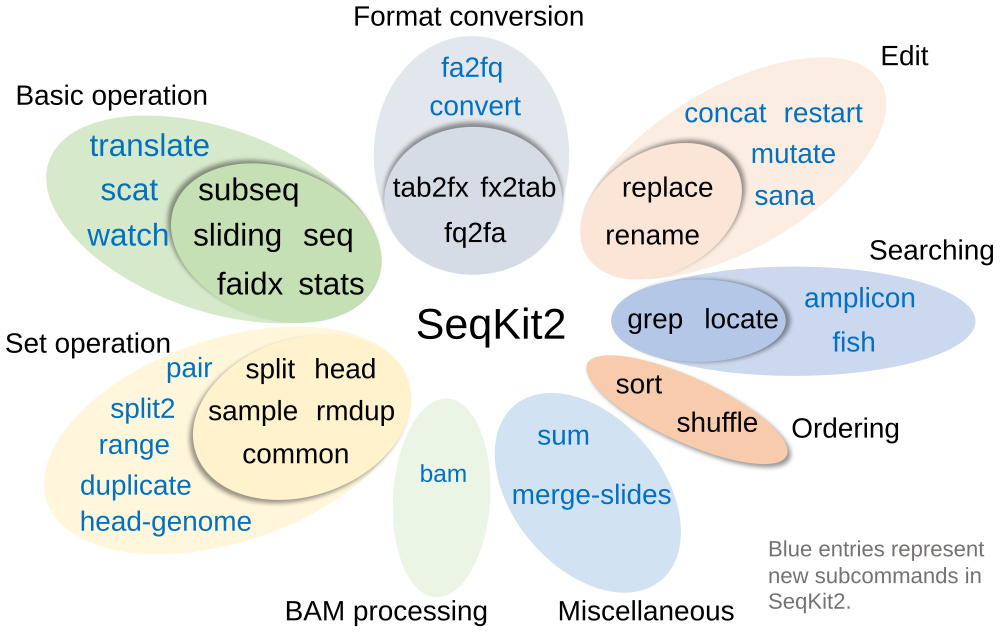

SeqKit - a cross-platform and ultrafast toolkit for FASTA/Q file manipulation
- Documents: http://bioinf.shenwei.me/seqkit (Usage, FAQs, Tutorial, and Benchmark)
- Source code: https://github.com/shenwei356/seqkit


- Latest version:


- Please cite:

,

- Others:

Features
- Easy to install (download)
- Providing statically linked executable binaries for multiple platforms (Linux/Windows/macOS, amd64/arm64)
- Light weight and out-of-the-box, no dependencies, no compilation, no configuration
conda install -c bioconda seqkit
- Easy to use
- Ultrafast (see technical-details and benchmark)
- Seamlessly parsing both FASTA and FASTQ formats
- Supporting (
gzip/xz/zstd/bzip2compressed) STDIN/STDOUT and input/output file, easily integrated in pipe - Reproducible results (configurable rand seed in
sampleandshuffle) - Supporting custom sequence ID via regular expression
- Supporting Bash/Zsh autocompletion
- Versatile commands (usages and examples)
- Practical functions supported by 38 subcommands
Installation
Go to Download Page for more download options and changelogs, or install via conda:
conda install -c bioconda seqkit
Subcommands
| Category | Command | Function | Input | Strand-sensitivity | Multi-threads |
|---|---|---|---|---|---|
| Basic operation | seq | Transform sequences: extract ID/seq, filter by length/quality, remove gaps… | FASTA/Q | ||
| stats | Simple statistics: #seqs, min/max_len, N50, Q20%, Q30%… | FASTA/Q | ✓ | ||
| subseq | Get subsequences by region/gtf/bed, including flanking sequences | FASTA/Q | + or/and - | ||
| sliding | Extract subsequences in sliding windows | FASTA/Q | + only | ||
| faidx | Create the FASTA index file and extract subsequences (with more features than samtools faidx) | FASTA | + or/and - | ||
| translate | translate DNA/RNA to protein sequence | FASTA/Q | + or/and - | ||
| watch | Monitoring and online histograms of sequence features | FASTA/Q | |||
| scat | Real time concatenation and streaming of fastx files | FASTA/Q | ✓ | ||
| Format conversion | fq2fa | Convert FASTQ to FASTA format | FASTQ | ||
| fx2tab | Convert FASTA/Q to tabular format | FASTA/Q | |||
| fa2fq | Retrieve corresponding FASTQ records by a FASTA file | FASTA/Q | + only | ||
| tab2fx | Convert tabular format to FASTA/Q format | TSV | |||
| convert | Convert FASTQ quality encoding between Sanger, Solexa and Illumina | FASTA/Q | |||
| Searching | grep | Search sequences by ID/name/sequence/sequence motifs, mismatch allowed | FASTA/Q | + and - | partly, -m |
| locate | Locate subsequences/motifs, mismatch allowed | FASTA/Q | + and - | partly, -m | |
| amplicon | Extract amplicon (or specific region around it), mismatch allowed | FASTA/Q | + and - | partly, -m | |
| fish | Look for short sequences in larger sequences | FASTA/Q | + and - | ||
| Set operation | sample | Sample sequences by number or proportion | FASTA/Q | ||
| rmdup | Remove duplicated sequences by ID/name/sequence | FASTA/Q | + and - | ||
| common | Find common sequences of multiple files by id/name/sequence | FASTA/Q | + and - | ||
| duplicate | Duplicate sequences N times | FASTA/Q | |||
| split | Split sequences into files by id/seq region/size/parts (mainly for FASTA) | FASTA preffered | |||
| split2 | Split sequences into files by size/parts (FASTA, PE/SE FASTQ) | FASTA/Q | |||
| head | Print first N FASTA/Q records | FASTA/Q | |||
| head-genome | Print sequences of the first genome with common prefixes in name | FASTA/Q | |||
| range | Print FASTA/Q records in a range (start:end) | FASTA/Q | |||
| pair | Patch up paired-end reads from two fastq files | FASTA/Q | |||
| Edit | replace | Replace name/sequence by regular expression | FASTA/Q | + only | |
| rename | Rename duplicated IDs | FASTA/Q | |||
| concat | Concatenate sequences with same ID from multiple files | FASTA/Q | + only | ||
| restart | Reset start position for circular genome | FASTA/Q | + only | ||
| mutate | Edit sequence (point mutation, insertion, deletion) | FASTA/Q | + only | ||
| sana | Sanitize broken single line FASTQ files | FASTQ | |||
| Ordering | sort | Sort sequences by id/name/sequence/length | FASTA preffered | ||
| shuffle | Shuffle sequences | FASTA preffered | |||
| BAM processing | bam | Monitoring and online histograms of BAM record features | BAM | ||
| Miscellaneous | sum | Compute message digest for all sequences in FASTA/Q files | FASTA/Q | ✓ | |
| merge-slides | Merge sliding windows generated from seqkit sliding | TSV |
Notes:
- Strand-sensitivity:
+ only: only processing on the positive/forward strand.+ and -: searching on both strands.+ or/and -: depends on users' flags/options/arguments.
- Multiple-threads: Using the default 4 threads is fast enough for most commands, some commands can benefit from extra threads.
Citation
- Wei Shen*, Botond Sipos, and Liuyang Zhao. 2024. SeqKit2: A Swiss Army Knife for Sequence and Alignment Processing. iMeta e191. doi:10.1002/imt2.191.
- Wei Shen, Shuai Le, Yan Li*, and Fuquan Hu*. SeqKit: a cross-platform and ultrafast toolkit for FASTA/Q file manipulation. PLOS ONE. doi:10.1371/journal.pone.0163962.
Contributors
- Wei Shen
- Botond Sipos:
bam,scat,fish,sana,watch. - others
Acknowledgements
We thank all users for their valuable feedback and suggestions. We thank all contributors for improving the code and documentation.
We appreciate Klaus Post for his fantastic packages ( compress and pgzip ) which accelerate gzip file reading and writing.
Contact
Create an issue to report bugs, propose new functions or ask for help.
License
Starchart